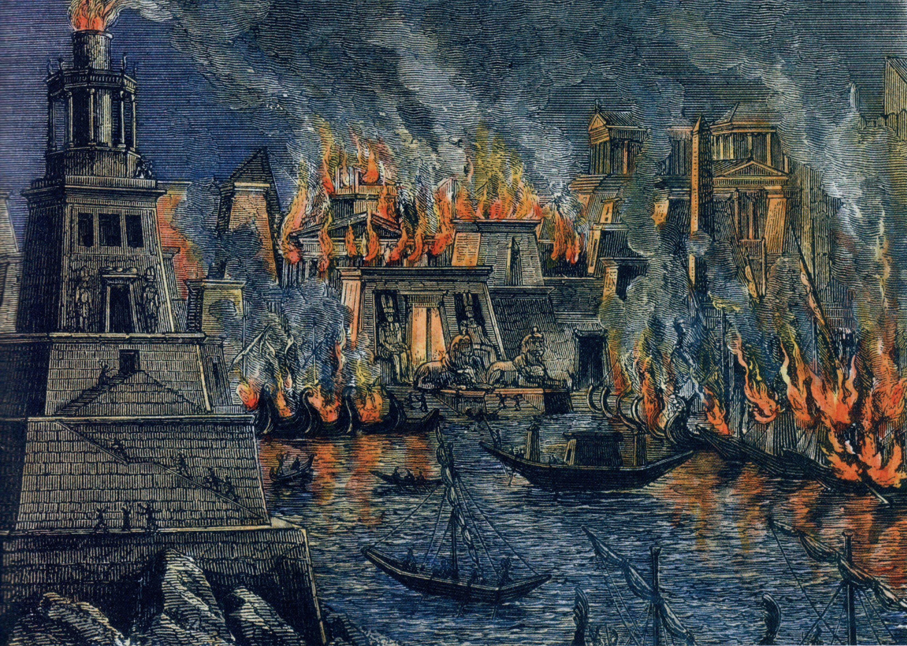

There are many sides
Web of Linked Data?

We are loosing thousands of Alexandria libraries each day.
We have lost so much of the early Web history, just as we have lost so much of early Human history.
Kalev H. Leetaru - University of Illinois
Link Rot
Illustration by the Project Twins
Content Drift
Strategies
Observational: perceived as discrete
Historical: perceived as continuous
Versioning systems
Transactional
Notification-based
Snapshot
Web archive
Versioning systems
Transactional
If a representation
Notification-based
Memento: travelling to the Web of the Past
Archive or Archiving ?
Linked Data archiving as the product
RDF indexes for versioning
Dydra, Virtuoso, XRDF3X, ...
Representing versions/time:
Technical
Linked Data archiving as the process
Some technological building blocks
Linked Data interfaces, change detection, publishing, crawling & querying
Technical, as well as Infrastructural & Societal.
What assumptions are there about data evolution?
Versioned Data?
Provenance is a directed acyclic graph.
Multiple truths can exist at the same time.
Historical Data?
Provenance is a timeline.
Only truth can exist at the same time.
Issues expand with Linked Data
Link Rot
Content Drift
Concept Drift
"Please don't change your vocabulary" (Check out DRIFT-A-LOD workshop)
Problem in other domains as well (Machine Learning)
Concept Drift
Reproducibility of Query results
Sustain the validity of claims
Backwards compatibility of applications
Who is responsible for archiving?
Publisher
Snapshot
Versioning systems
3rd party
Hybrid: Publisher and/or 3rd party
Transactional
Notification-based
Persistent Identification
Robust Links
Data archiving intrests more than curators & activists
Data driven journalism.
Product: transparency of the editorial process
Process: interaction with users, public
Archivability
Linked Data is in essence easier to archive.
Raw, already machine processable data
No obfuscation by client-side scripting
Accessibility of content to stimulate archiving.
The content in HTML+RDFa that dokieli produces is accessible (readable) without requiring any CSS or
JavaScript, ie. text-browser safe . Breaking this "rule" in future development should be
considered an anti-pattern (or a bug) in dokieli.
dokieli documentation , Sarven Capadisli
Choices in Linked Data publication facilitate or hinder archiving.
Intelligent Server High resource granularity
Intelligent Client Data not as accessible Need to participate in archiving process
Prevent mistakes from the past: complexity of the client & publishing
Standardisation: make sure this is thought of